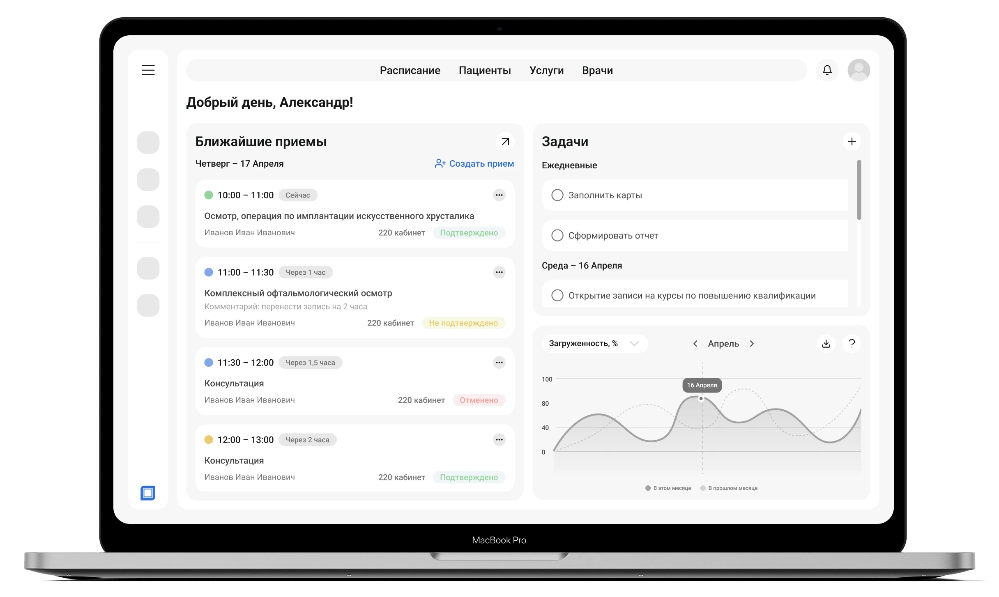

Orbitalis
Проект Orbitalis был направлен на разработку дизайн-концепции информационной системы для офтальмологических центров. Система задумывалась как единое рабочее пространство для врачей и администраторов клиники, с акцентом на автоматизацию рутинных процессов и сокращение времени работы с документацией. Летом 2025 года состоялась командировка в Санкт-Петербург и очная встреча с главным врачом клиники «Терра Зрения». Проект реализовывался командой из двух веб-дизайнеров, двух программистов и архитектора

Мой вклад в проект
В проекте я участвовал в разработке пользовательских сценариев и проектировании интерфейсов совместно с другим веб-дизайнером. Я работал над User Story, логикой авторизации, сценариями приема и расписания, а также над прототипами ключевых экранов системы. Самостоятельная регистрация пользователей не предусматривалась. Работа над проектом велась в период с марта по август 2025 года